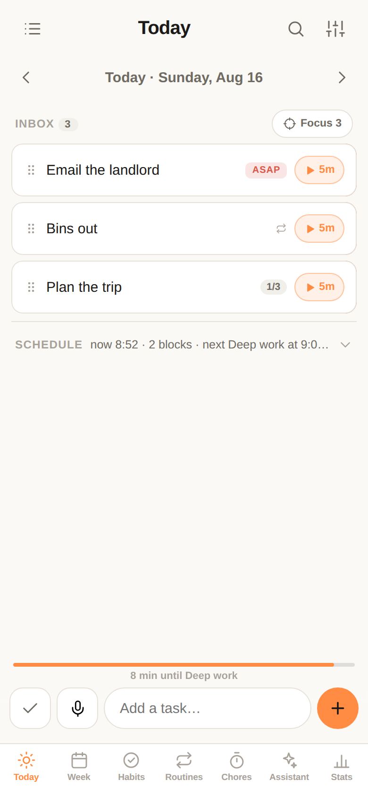
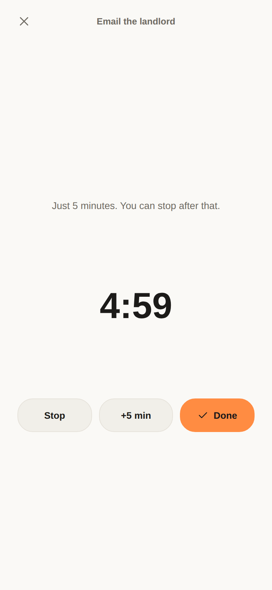
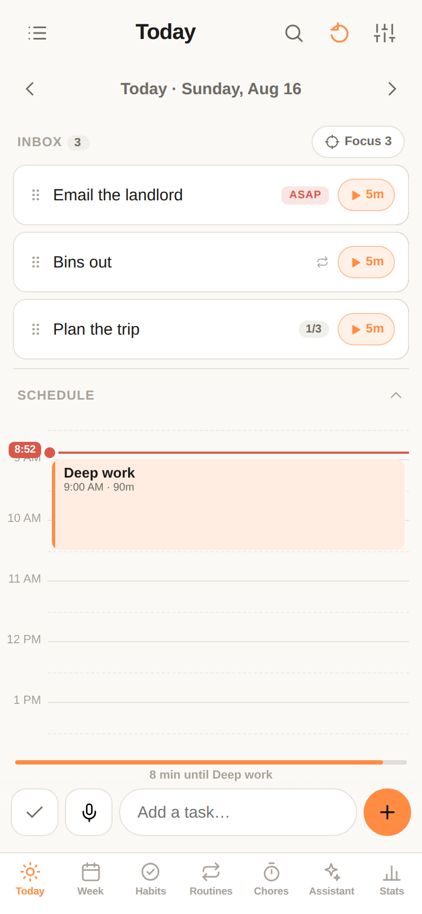
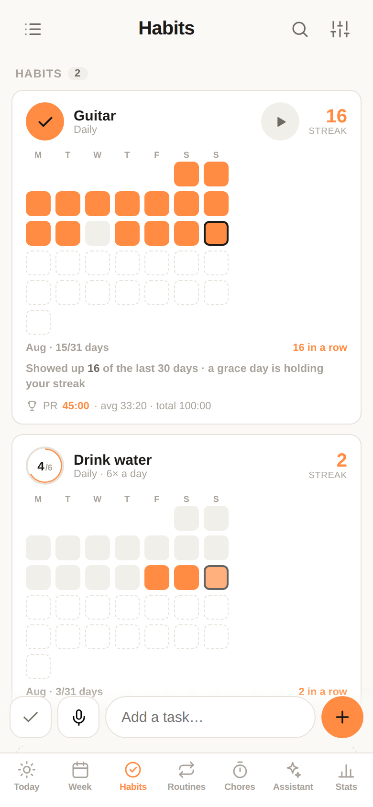
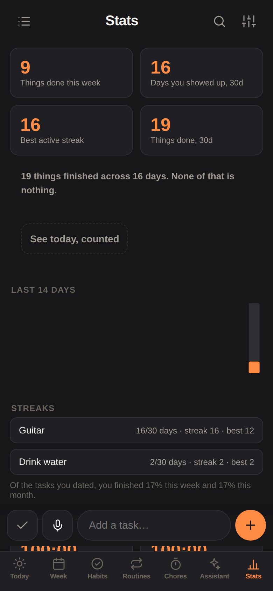

DayFlow is a day planner built around that, for brains that find organising easier than beginning.
Open DayFlowFree · no account · nothing leaves your phone
One tap starts a timer. No scheduling first, no category, no estimate. The timer runs past five minutes rather than shouting at you, and it records how long the thing actually took — so next time DayFlow fills in the real number instead of your optimistic one.



One free miss a week. Every habit also shows how many of the last 30 days you turned up, so a bad Tuesday can't erase the month.
One tap hides everything except three things. A forty-item inbox is the thing that makes people close the app.
Anything untouched for three weeks steps aside into Someday on its own. Nothing is deleted, and nothing nags.
Five minutes before a block starts and five before it ends — being yanked out of something at the exact moment never works.
Finish one thing and the next is offered with a ten-second countdown and an easy out. That gap is where the hour goes.
A labelled undo bar sits within thumb reach for twelve seconds after anything destructive. Impulsive taps are part of the territory.


DayFlow is a web app, so there's no App Store and no download. Adding it to your Home Screen makes it behave like any other app — full screen, works offline, its own icon.
https://itschrisjames.github.io/dayflow/
Worth knowing before you rely on it. I'd rather you find these here than three weeks in.
This is early and I want the unflattering version. The most useful thing you can tell me is what you stopped using after a week, and why.
DayFlow is free, and every feature stays free — no trial, no locked timer, no account. If it's genuinely helping, you can chip in, and a supporter key turns off the one place the app ever mentions money.